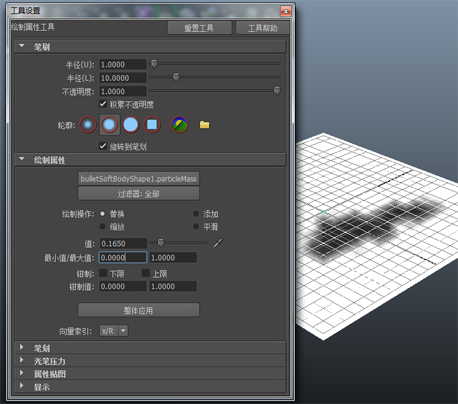

Bullet 可以将每个顶点的属性绘制到柔体。您可以绘制“质量”、“线性刚度”和“弯曲阻力”属性。有关该过程中特性设置的详细信息，请参见
绘制属性工具选项和
Artisan 工具设置。
注： 将“质量”设置为零的效果是将顶点锁定到适当的位置。
在柔体的顶点上绘制特性值：
- 选择柔体。
注： 柔体在 Maya 大纲视图中的标识方式是：原始多边形对象名称加后缀 _Solved。
- 选择“Bullet > 绘制柔体顶点特性”(Bullet > Paint Soft Body Vertex Properties)，然后选择要绘制的特性。
Maya 的“绘制属性工具”(Paint Attributes Tool)设置窗口将会打开，您可以使用其所有绘制模式和选项。如果绘制属性设置最初不可见，请选择“窗口 > 设置/首选项 > 工具设置”(Window > Settings/Preferences > Tool Settings)。
要在 Maya 视口中查看权重，需要从 Maya 的“面板”(panel)菜单中选择“着色 > 对所有项目进行平滑着色处理”（Shading > Smooth shade All）或“着色 > 着色对象上的线框”(Shading > Wireframe On Shaded)。
- 要通过将其质量设置为 0，简化柔体上顶点的“固定”，请使用“设置柔体顶点特性”(Set Soft Body Vertex Properties)选项。
- 选择要设置的顶点。
- 选择“Bullet > 绘制柔体顶点特性 > 质量”(Bullet > Paint Soft Body Vertex Properties > Mass)。将显示“Bullet 柔体每粒子设置”(Bullet Soft Body Per-Particle Set)窗口。
- 在“Bullet 柔体每粒子设置”(Bullet Soft Body Per-Particle Set)窗口中，键入新的质量值。在这种情况下值为 0。
- 单击“确定”(OK)。